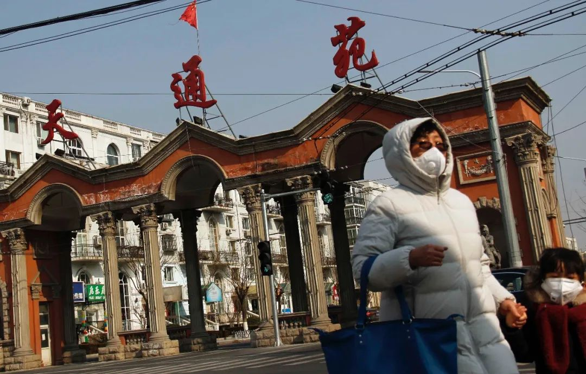
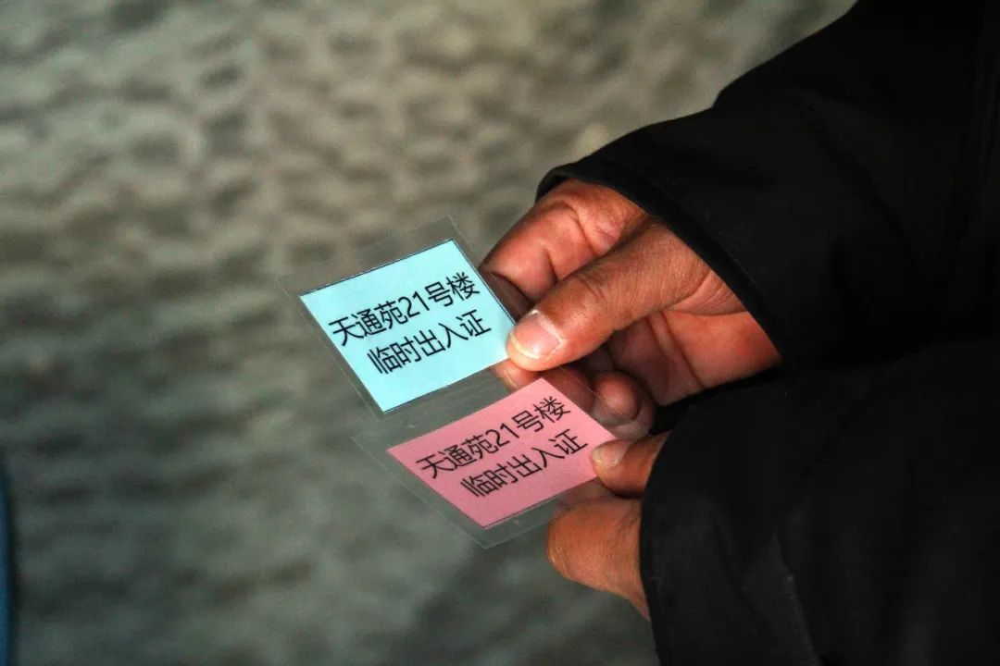
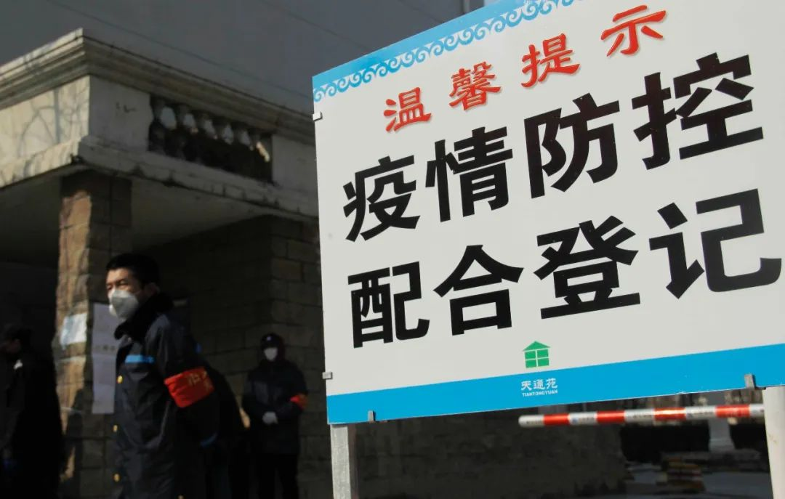
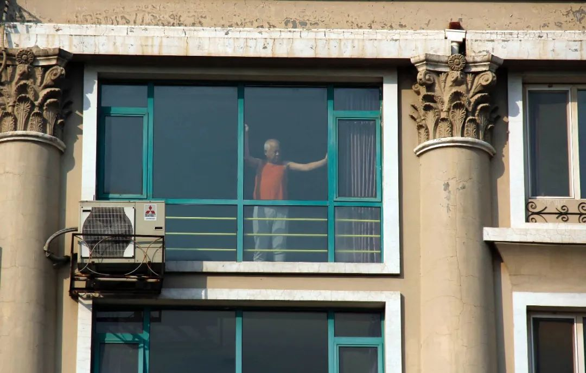
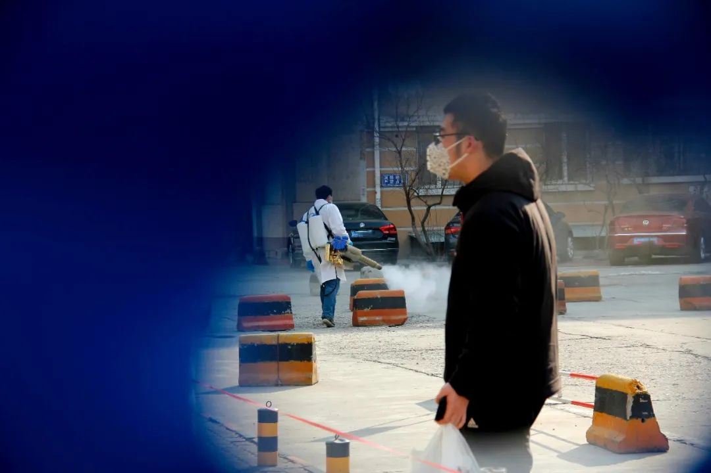
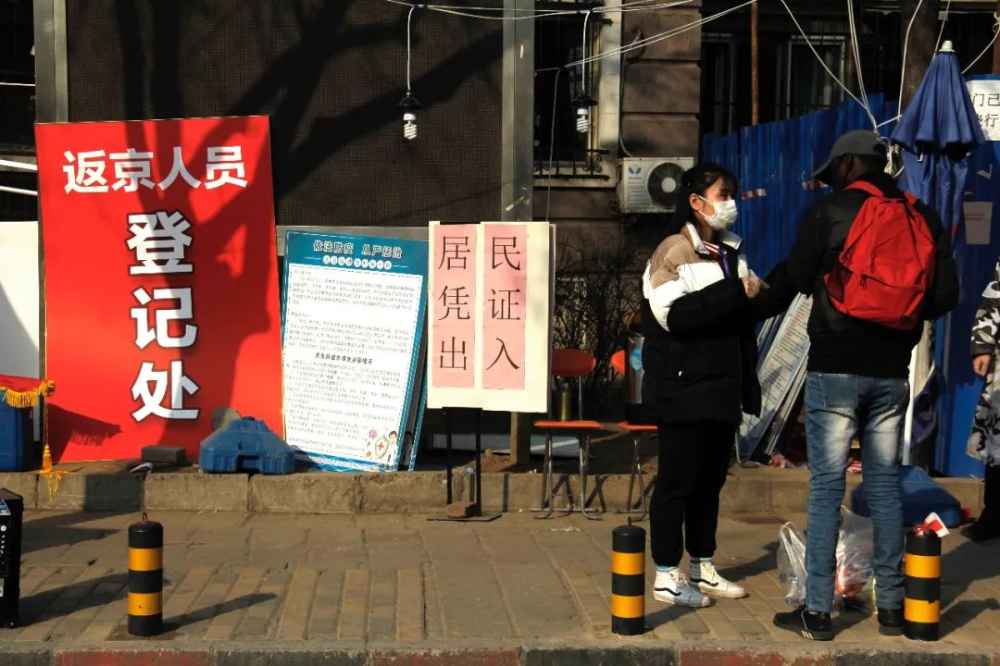

小区封门堵截返城者，这样的防疫措施真的好吗
原文链接 备份链接 在法律界人士看来，各地自行采取的“封村”、“封小区”等极端做法涉嫌违法。防控疫情需要全国一盘棋，而不是“各扫门前雪” 这家小区加强登记筛查但未将租客拒之门外 文 |《财经》记者 王博 周源 陈潇潇 马霖 王凤 杨立赟 …
 近50万人的社区防疫战，
近50万人的社区防疫战，
流动人口密集与社会治理下沉之困

天通苑人员密集，外来人员多。2月6日以来，北京市疾控中心连续发布新发病例活动过的小区或场所，天通苑社区占了6例。
从最早风传限制外地人员返回社区，到天通东苑二区三次被列入新增确诊病例活动场所名单，天通苑屡成热门话题。常住人口基数庞大、租户群体密集返京，有“亚洲最大社区”之称的天通苑疫情防控压力巨大。
作为 “巨无霸”社区，它是超大城市的缩影，也在防疫之战凸显出基层治理的诸多难题。
人手严重不足
《中国慈善家》在采访中发现，随着外地返京人群不断增加，天通苑社区也严阵以待，小区门口均有醒目的红色标识牌提示：外地返京居民必须到社区主动登记，体温测量正常后方能进出小区。

登记过的来京人员发放蓝色临时出入证，14天隔离期满后换取粉色临时出入证。
各主要街道上，除了戴有“昌平志愿者”红袖章的保安人员、居委会及社区工作人员外，鲜有行人。偶有从超市采购完物品回家的居民路过，也个个戴着口罩、行色匆匆。
虽然隶属北京近郊的昌平区，但由于临近地铁、出租房源较多，天通苑成为北京外来人口最密集的地区之一。据统计，在昌平188.9万常住人口中，回天地区（回龙观、天通苑）约86.3万。天通苑共有16个分区、645栋楼，常住人口近50万。
天通苑素有“睡城”之称，职（业）住（所）分离严重。昌平人力社保局与高德地图大数据分析显示，绝大多数回天地区就业人口的就业半径在10公里以上，工作地点遍布主城区。
随着返京人群不断增多，社区防控工作的重压也传导到街道、社区管理者和志愿者身上。
《中国慈善家》从昌平区政府了解到，天通苑南街道社区党员干部、社工及志愿者从大年初一下午开始，便逐一查阅档案，电话联系辖区居民，重点询问是否出京，并强调出京人员返京后务必联系居委会进行登记、自觉在家隔离观察14天。
除夕之前便从湖北某县返京的刘健租住在天通南苑某小区。他告诉《中国慈善家》，回来后这些天，他接到过几十个电话。从派出所到居委会，各部门都在询问他从哪里返京、去了哪里、目前身体状况如何等等。为了避免麻烦，他整个假期都没怎么出门，完全靠网购囤积食物和日用品。
一位快递小哥拿着两个手机，不停地说着。小区封闭管理，快递人员不得进入，收件人只能出去小区取件。快递小哥说，他的工作效率从来没有这么低过。
密集的电话背后是巨大的防控压力，庞大的人口基数让工作人员应接不暇。
以天通苑北街道为例，该街道下辖9个社区，常住居民户数在5000户左右的超大型社区6 个，仅天通北苑第一社区常住户便有5806 户，常住人口15389 人。但是党支部、居委会工作人员仅9 人，即平均一位工作人员服务645 户、2564 位居民，明显人手不足。
人少事多也让日常防控中的疏漏在所难免。
据节后返京的居民小李观察，她所在单元楼门口的工作人员并没有对出入楼门的居民一一检查出入证，也没有测体温。小李回忆，刚回京的几天还可以闻到楼道有酒精消毒的味道，电梯里也有一次性便利贴供居民在按电梯时做防护。但最近几天，小李发现一次性便利贴经常“断货”。
为弥补人手不足，昌平区疫情防控工作领导小组要求，区属部门一律下沉基层支援社区防控。其中，在天通苑南街道，昌平区科委便安排了党员干部、职工共40人前往天通苑第二社区协助开展疫情防控。

天通苑多个小区门口都是“重兵把守”。对进出小区的人员和车辆进行严格登记管理已成为常态。
《中国慈善家》实地走访发现，在天通苑，戴着“昌平志愿者”红袖章的志愿者大多是各个社区年龄偏大的居民以及保安，鲜有年轻人。某居委会巡街的工作人员告诉记者，这些退休的大爷大妈们平时为社区做志愿服务还行，但在疫情期间其实更容易成为被传染对象。
针对志愿者人数不足和年龄偏大的问题，天通苑社区的一些公益组织也开始通过网络在年轻居民中招募志愿者。
业主有限参与
家住天通北苑的杨川一家从春节到现在一直窝在家里，哪也没敢去。他所在的社区分成了4个管片，封锁了大部分出入口，各社区之间也禁止穿行。

为了减少被感染的机率，居民都尽量在家“宅”着。
杨川感觉最大的变化是，疫情发生后居委会、街道社区发动居民建立业主微信群，群里发布街道、居委会的各种信息，业主之间互相通报情况。他觉得这次天通苑各小区、楼宇的业主群的确帮了大忙，“为什么过去没有早点建立这样一个社区互动的渠道？”
住在天通中苑的小邱说，疫情发生后她所在的居委会进行了入户摸底，也建立了业主群，并把相关注意事项和进展情况在群里进行通报。社区组织了送菜渠道，需要什么东西群里预定，第二日按区域配送。

为了避免人员接触，购物平台新增设的无接触配送存放点。
据小邱介绍，通过微信群，业主也会互相关注左邻右舍的情况，重点关注摸底排查时标注出的出租屋，如看到外地返京人员会在群里上报，由社区去交涉。
对于业主委员会是否在其中发挥作用，杨川和小邱等多位受访居民均表示，没有见到业主委员会的人做什么，他们甚至不知道是否有业主委员会存在。
中国人民大学公共管理学院教授毛寿龙在接受《中国慈善家》采访时表示，以目前社区的基层组织架构，要把工作做得面面俱到是有难度的。社区工作人员少，单靠居委会的力量是不够的。
毛寿龙认为，对于天通苑这类租户多、人员密集的社区，业主仍然应该是小区的第一责任人，业主应该请租户作为代表，参与小区的组织管理。从目前政府防疫工作的文件来看，没有把发动业主力量摆在很重要的位置，只看重居委会的工作。实际上，政府应该倡导更多业主参与社区管理，才能做好防疫工作。
灵活防控尺度
武汉疫情暴发后，随着北京防控措施的加强，网络上也传出了天通苑1月30日后外地返京人员和车辆均不得进入社区的消息。虽然天通苑南北两街道均出面辟谣，但也反映了人们对返京潮带来的防控压力的敏感。
一方面是流动人口多，返京人群密集的超大社区必须警惕和严控潜在病毒携带者的交叉感染，另一方面又要保证返京人群的正常流动和生活。这对管理者来说，是两难之选。

天通东苑二区传来马达轰鸣声，透过封堵的围挡可以看到工作人员正在喷雾消毒。2月17日新发病例活动小区，就包括此小区。
中国社科院法学研究所副研究员余少祥认为，社区是防控最重要的环节之一，社区应该掌握居民返京路线、回京后每天的行程，主动与返京居民建立联系也是必要之举。一旦发生确诊病例，这些汇总到的信息也有助于跟踪密切接触者。
按照北京市政府要求，2月14日起所有返京人员均应居家或集中观察14天。在天通苑地区，已要求湖北返京人员必须先前往区级集中安置点——位于天通苑的黄河京都会议中心观察隔离，费用自理（含餐每人每天280元）。

社区工作人员正在向外籍人士讲解防疫注意事项。
中国人民大学危机管理研究中心主任唐钧对《中国慈善家》表示，天通苑这种人口密集社区和2003年SARS期间的香港淘大花园情况类似，由于环境的高风险性，疫情防控的等级自然也应该更高，属地政府应该考虑调配更高等级的资源比例来增强防控措施。
唐钧同时表示，随着时间推移，疫情风险程度降低之后，则需要考虑在风险管控和社会治理常态化、人性化之间求得平衡，以保证社会秩序的正常运行。
摄影：张旭
值班编辑：冯超
封面报道之三
《武汉攻坚——我们如何与疫情赛跑》
（由5篇报道组成）
*点击下图，一键下单*

原文链接 备份链接 在法律界人士看来，各地自行采取的“封村”、“封小区”等极端做法涉嫌违法。防控疫情需要全国一盘棋，而不是“各扫门前雪” 这家小区加强登记筛查但未将租客拒之门外 文 |《财经》记者 王博 周源 陈潇潇 马霖 王凤 杨立赟 …
原文链接 备份链接 经历整整31天的艰难考验之后，武汉疫情防控已经从无序走向有序，但千万居民的生活从无序到有序才刚刚开始，这个疫情核心区的社会经济生活全面恢复，还面临很多挑战 2020年2月11日，武汉市洪山体育馆武昌方舱医院，社区工作人 …
原文链接 备份链接 减少行政方式作出各种不必要的防控要求，减少对企业运行的过度干预，强化科学管控和提高治理水平，提高城市防控效率，应该是城市管理者迫切需要考虑的问题 文 | 李铁 虽然防范新冠肺炎疫情已经取得了明显的效果。但是当前面临着 …
原文链接 备份链接 2月18日和19日，上海新冠肺炎确诊病例连续2天零增长。对于这个人口超过2400万的超大城市，消息令人振奋。 要帮助基层准确定位重点排查人群，入沪人员全数据的信息收集是重要的第一步。 上海复工的第一天，防控升级， …
原文链接 备份链接 【财新网】（记者 吴红毓然）“今天是拉网排查的最后一天，谁收到过电话了？”2月19日，一位常青花园第五社区业主问道，“从疫情爆发到现在，我们全家都从来没有接到一个排查的电话。我父母不会用微信，也不会在群里自查后上报。 …